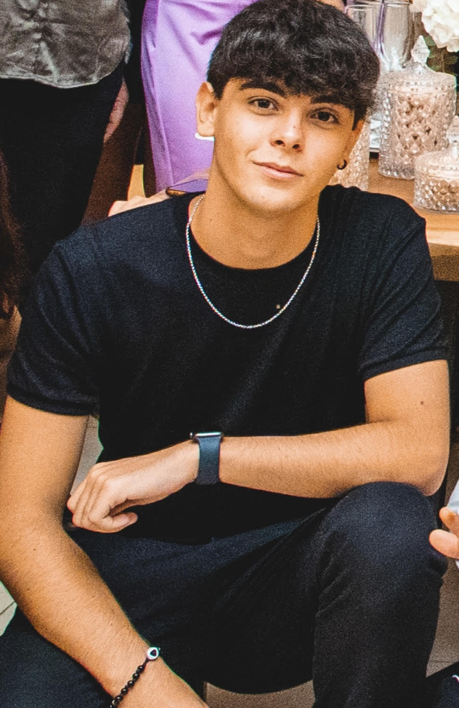

CHI SONO
Ciao, mi chiamo Fabio Lattanzio, sono un ragazzo di 20 anni con una grande voglia di fare e di mettermi in gioco. Ho effettuato molti corsi di cui il più recente basato su sviluppo di siti web grazie a "Leader" che mi ha aiutato in questo grazie ad un percorso di circa 5 mesi. Ciò che mi porta sempre avanti è la mia voglia di fare e di imparare il più possibile dalle persone che ho vicino e dalle persone che mi spiegano qualcosa. Qui sotto vi lascio il mio curriculum in modo da poter visualizzare meglio il mio profilo personale e le mie conoscenze.